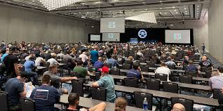
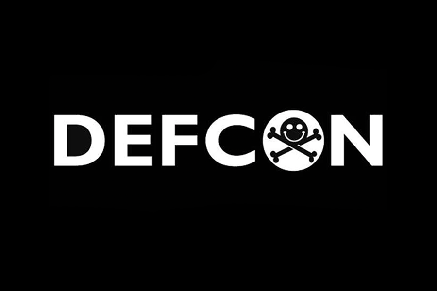

History
TechCon began in 2005 as a small gathering of technology enthusiasts
and has since grown into one of the leading tech conferences in the
world. Each year, thousands of professionals and innovators come
together to exchange ideas and inspire future advancements.

Our Mission
At TechCon, our mission is to empower the tech community by fostering
innovation, promoting collaboration, and driving forward-thinking
solutions to global challenges. We believe in creating a platform for
learning and inspiration for everyone, from students to seasoned
professionals.

Notable Past Speakers
Dr. Jane Smith
A visionary AI researcher, Dr. Smith revolutionized natural language
processing and delivered a keynote on ethical AI development in
2020.
John Doe
As a pioneer in renewable energy tech, John shared groundbreaking
insights on sustainable technologies in 2022.

Emily Zhang
An expert in cybersecurity, Emily’s 2023 session highlighted the
future of privacy and digital security.